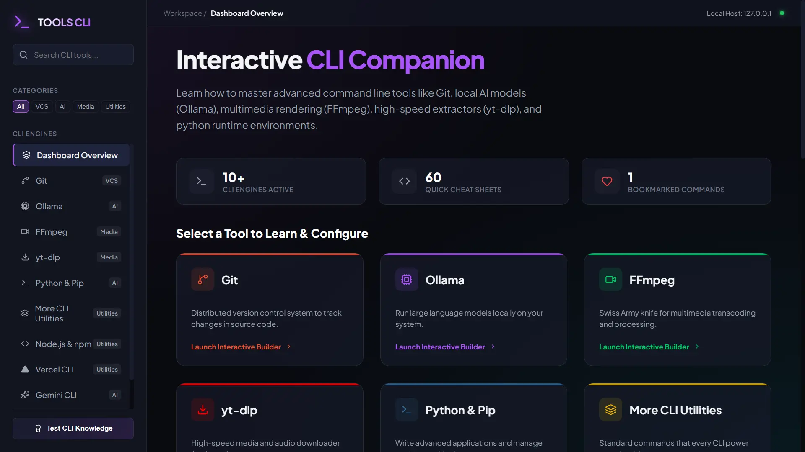

CLI Developer Tools
Active Beta
tools-cli.konshu.in
Automation Scripts & CLI Utilities

Overview / संक्षिप्त विवरण
tools-cli.konshu.in is an interactive terminal generator and developer dashboard designed to simplify command line building. By offering visual controls that output functional execution syntaxes, it helps developers configure and master tools like Git, Docker, and FFmpeg without memorizing verbose parameter flags.
tools-cli.konshu.in डेवलपर्स के लिए एक ऑटोमेशन स्क्रिप्ट स्टोर है। यहाँ पर वन-लाइनर कर्ल (curl) कमांड्स मिलती हैं जिनकी मदद से आप प्रोजेक्ट सेटिंग्स, लिंटर, और डॉकर को सीधे टर्मिनल में आसानी से कॉन्फ़िगर कर सकते हैं।
What it Does / इससे क्या-क्या होता है?
Multi-Tool CLI Companion
Interactive generators for Git configuration, Ollama local model running, FFmpeg video encoding, yt-dlp media fetching, Python, Docker containers, jq parser, and tmux.
Git, Docker, FFmpeg, Ollama, yt-dlp और tmux आदि को आसानी से कॉन्फ़िगर करने के विकल्प।
Live Parameter Mutators
Mutate video bitrates, commit messages, or Docker port binds visually and watch the terminal script compile live on screen.
वीडियो बिटरेट, पोर्ट बाइंडिंग या कमिट मैसेजेस को विजुअली बदलें और कमांड बनते हुए लाइव देखें।
Fast Copy & Execute Boilerplates
Provides prebuilt tmux cheatsheets, ESLint configuration rules, and git branching workflow templates with one-click terminal copying.
टर्मिनल कमांड्स, कॉन्फ़िगरेशन फ़ाइलें और शॉर्टकट्स को तुरंत कॉपी करने का विकल्प।
How to Use / इसे कैसे इस्तेमाल करें?
1
Select CLI Technology
Launch the toolkit. Select the required CLI card from the dashboard menu (e.g., FFmpeg or Git).
वेबसाइट खोलें। डैशबोर्ड में से अपनी पसंद की टेक्नोलॉजी (जैसे FFmpeg या Git) चुनें।
2
Toggle Parameters Visually
Adjust form options (e.g., select audio extraction, rename commits, specify port paths) and see the terminal code generate live.
पैरामीटर्स सेट करें (जैसे ऑडियो कन्वर्ट करना, कमिट का नाम बदलना) और स्क्रिप्ट लाइव जनरेट होते हुए देखें।
3
Execute Script Locally
Click the copy button and paste the generated command directly into your terminal.
कॉपी बटन पर क्लिक करें और जनरेट हुए कमांड को अपने लोकल टर्मिनल पर रन करें।
$ curl -sS https://tools-cli.konshu.in/install/env-setup.sh | bash
# Starting kOnshu environment bootstrapping...
# [✓] Checked OS: Linux x86_64
# [✓] Checked Dependencies: git curl node
# Downloading linter setups...
[1/3] Cloning Prettier Configuration... Done!
[2/3] Initializing Git config guidelines... Done!
[3/3] Creating workspace .editorconfig file... Done!
"kOnshu configurations installed successfully! Happy Coding! 🍳"